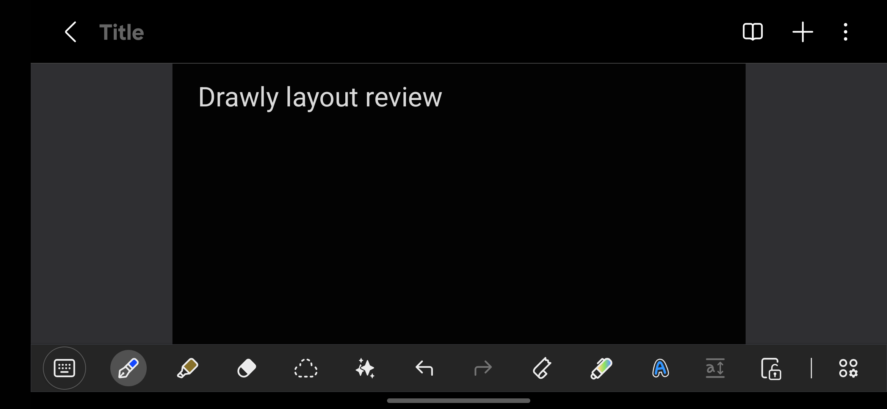
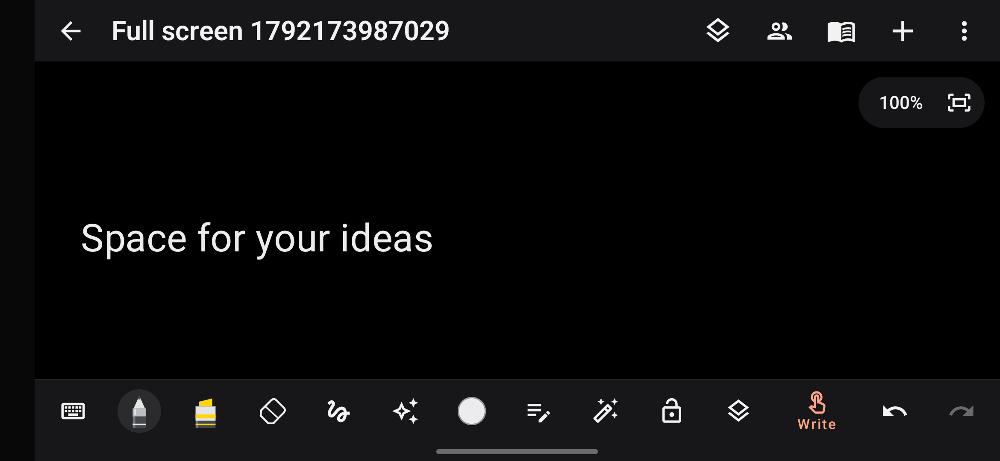
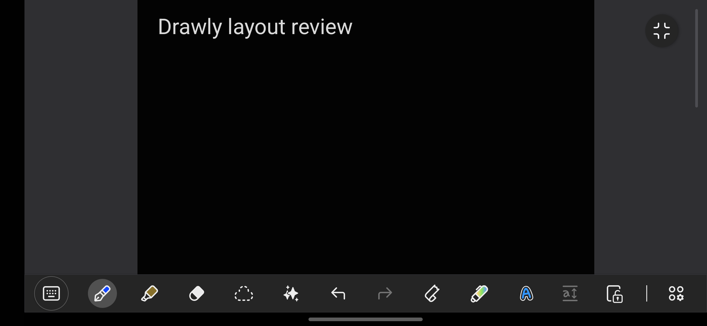
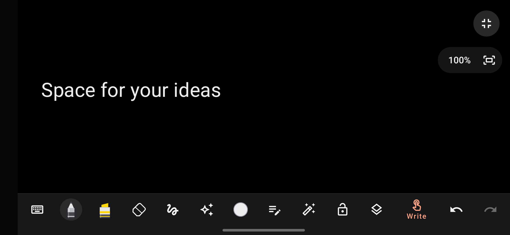
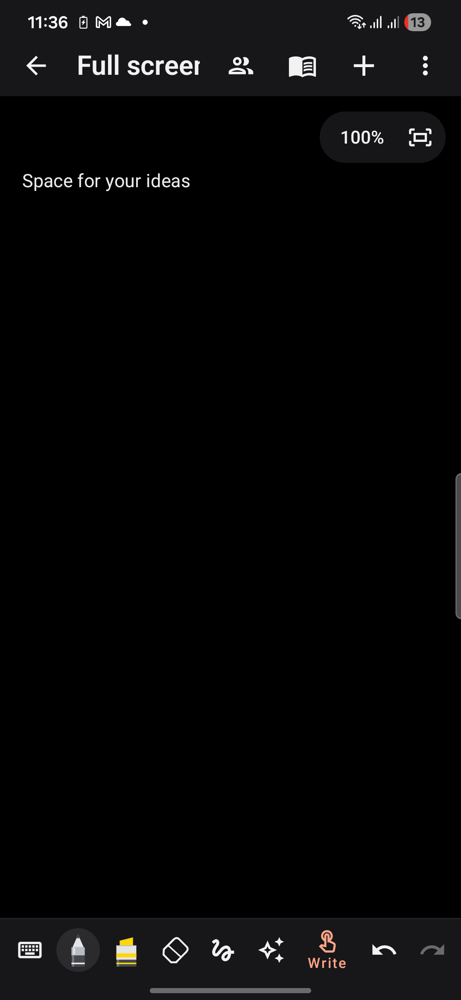
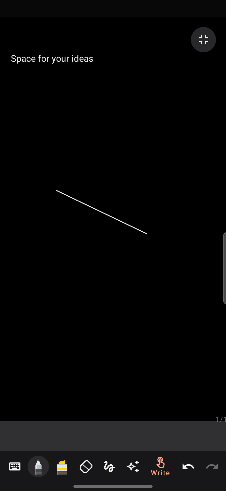
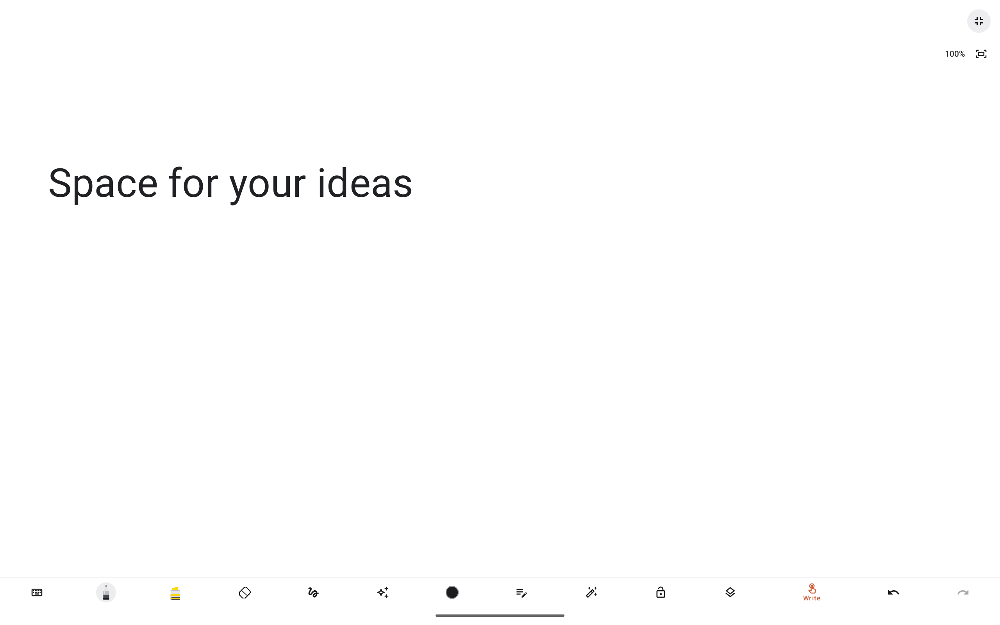

Compared against the installed Samsung Notes app on the connected Galaxy S22 (SM-S901E), Android 16/API 36, using a newly created reference note. Existing user notes were not edited. The reference fixture was moved to Recycle bin afterwards.
| Mode | Status bar | Header and tools |
|---|---|---|
| Normal portrait | Visible | Header visible; phone tools remain below the canvas. |
| Normal landscape | Hidden | Header stays visible without the clock/status strip. More handwriting controls fit across the available width. |
| Full-screen editing | Hidden | Header and tablet sidebar hidden; handwriting or text controls remain at the bottom. A small neutral exit control stays available. |
| Leaving full screen | Restored in portrait | Exit or Back restores the normal editor before leaving the note. Leaving the editor restores normal app status-bar visibility. |
Full screen survives rotation and keeps drawing, undo/redo, text entry and page access working. The tablet sorter returns on exit if it was previously open. Camera cutouts and navigation insets are protected. The zoom indicator appears below the exit control, and the system can reveal the status bar with an edge swipe. Reading mode remains a separate mode.
The accepted neutral light/dark colours, updated icon, cached stroke geometry, thumbnail caching and existing collaboration behaviour are retained.







npm run typecheck.Android 16 ignores app-requested orientation on large screens. The final full-screen test rotates the display through the system, as a user would, and restores its original rotation settings. Captures wait for window events to settle rather than recording the rotation animation.
Logs: build-fullscreen-all-tests.log, build-fullscreen-samsung-tests.log, build-fullscreen-phone-rotation.log, build-fullscreen-tablet-final.log, build-fullscreen-release-tests.log, build-fullscreen-final.log and build-fullscreen-checks-final.log.
Version 2.2, code 28, minimum API 24, target/compile API 36. The production APK is non-debuggable. APK and AAB signature verification passed. The APK ZIP alignment and all required 64-bit native ELF LOAD alignments pass at 16 KB; see alignment evidence and SHA-256 hashes.
Update the existing Notes Preview with:C:\Users\vardh\AndroidStudioProjects\Notepad\app\build\outputs\apk\device-preview\notes-preview.apk
Signed production APK:C:\Users\vardh\AndroidStudioProjects\Notepad\app\build\outputs\apk\release\app-release.apk
Signed Google Play bundle:C:\Users\vardh\AndroidStudioProjects\Notepad\app\build\outputs\bundle\release\app-release.aab
Production certificate SHA-256: B9:42:A3:F9:A6:7F:8B:A6:F2:B2:AD:1D:FC:12:08:32:EF:5D:4E:CF:5A:AF:67:87:7D:0E:BD:33:EA:8E:A7:81. Credentials were consumed from the ignored local signing configuration, never copied into the app or report. Release builds now fail if signing credentials are absent or the Preview application ID is selected.
The live app-link association currently trusts the two earlier certificates, not the new direct-APK certificate above. The worker source now adds this certificate while retaining both live certificates; that source update has not been deployed. Verify Google's Play app-signing certificate separately, since Google may sign delivered APKs with a different key. Existing clients and live rooms were not changed during this review.
The installed original 1.4 package was left intact. Notes Preview was updated without clearing its data. A direct production APK can update an existing installation only when their signing certificates match; do not uninstall an existing notes app to work around a signature mismatch.
The S22 has no S Pen digitizer. Injected pressure/palm tests cover the input pipeline, not physical S Pen latency. Microphone hardware, downloaded recognition models, biometric prompts, every Android/OEM version and a universal frame-rate guarantee are outside this review. Collaboration still synchronizes ink/canvas state; text, images, PDFs and audio are not synchronized, and whole-canvas conflicts retain the existing last-writer behaviour.